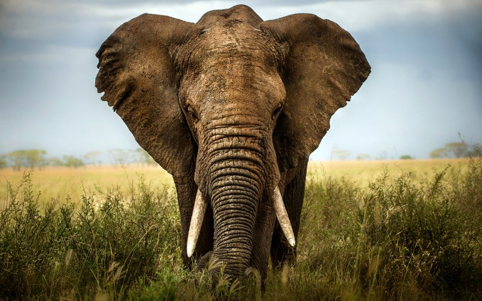

Voi phân bố rải rác khắp châu Phi cận Sahara, Nam Á, Đông Nam Á và thích ứng với nhiều môi trường sống khác nhau như thảo nguyên, rừng, sa mạc và đầm lầy. Chúng là động vật ăn cỏ, tụ tập gần nguồn nước. Chúng được coi là loài chủ chốt do chúng có tác động đáng kể lên môi trường cảnh quan xung quanh chúng.

Là một trong những biểu tượng động vật được công nhận rộng rãi nhất trong văn hóa loài người, sư tử đã được mô tả rộng rãi trong các tác phẩm điêu khắc và tranh vẽ, trên quốc kỳ, và trong các bộ phim và văn học đương đại. Sư tử đã được nuôi nhốt từ thời Đế quốc La Mã và là một loài chủ chốt được tìm kiếm để triển lãm trong các vườn bách thú trên khắp thế giới kể từ cuối thế kỷ 18. Miêu tả văn hóa của sư tử là nổi bật trong thời kỳ đồ đá cũ; tranh khắc và tranh vẽ từ hang động Lascaux và Chauvet ở Pháp đã có từ 17.000 năm trước, và các mô tả đã xảy ra ở hầu hết các nền văn hóa cổ đại và trung cổ trùng với các phạm vi trước đây và hiện tại của sư tử.